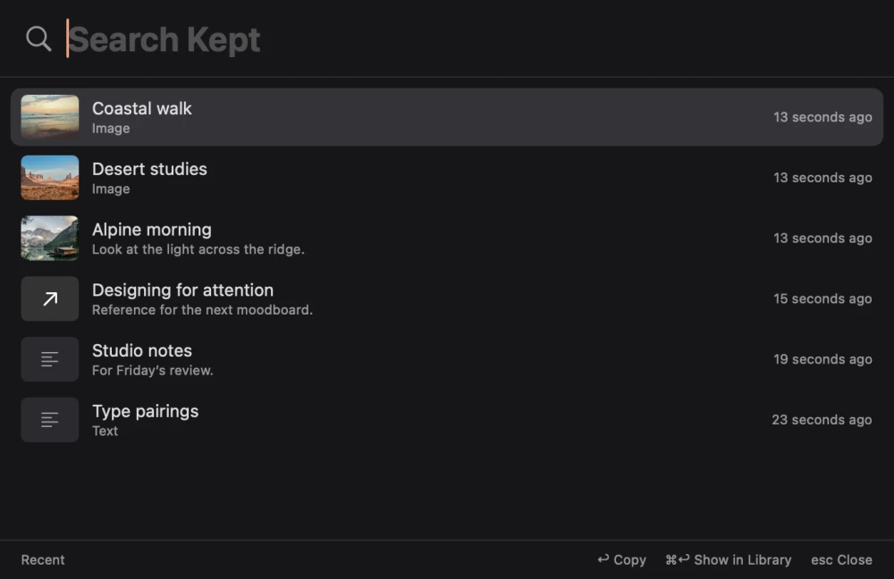

Find a photo by its note.
Search for “ridge” and open the alpine snip to read the note saved with it.
A CAPTURE LIBRARY FOR MAC
Snip your screen, save what you copy, and find it all again in a private library on your Mac.

PRODUCT FILMS
Search for “ridge” and open the alpine snip to read the note saved with it.
Filter the library to Links and open a reference to see its URL and moodboard note.
WORKFLOW
Press ⌃⌥S to grab a region. Kept copies it to your clipboard and saves it once in your library.
Opt in to clipboard capture for images, links, or text. Add a note or favorite an item so you can come back to it.
Search your notes, copied text, and words inside images. Press ⌃⌥K to open Quick Search from anywhere.
INTERACTIVE DEMO
Explore a sample Kept library. Try searching for “ridge” to match a note or “studio” to find a text clip.

AGENTS
Capture what is wrong as you spot it, then hand the lot to Claude Code or Codex in four words. Kept passes over your latest captures, with your notes, and the agent gets to work.
› Kept fix last 4
kept get_latest count 4 · with images
✓ Fixed 4 of 4 4 files changed
claude mcp add --scope user kept -- "$HOME/Library/Application Support/Kept/kept-mcp"
codex mcp add kept -- "$HOME/Library/Application Support/Kept/kept-mcp"
~/Library/Application Support/Kept/kept-mcp
The same command on every Mac. Open Kept once first.
Agents can search your library and read what you saved. They cannot add, change, or delete anything.
Captures and their search index live in a local SQLite library. An agent that runs its model in the cloud sends what it reads to that provider.
get_latest for what you just captured, search_library and list_recent to find older items, and get_item to open one.
Build Kept on macOS 14 or later with the Xcode Command Line Tools and Swift 6. Repository access is required.
View build instructions